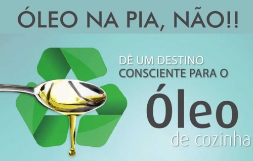

Sobre Nós
A Ambiental Future é um site dedicado ao descarte responsável de óleo usado, visando a proteção do meio ambiente e a promoção da sustentabilidade. Nosso objetivo é conscientizar e educar as pessoas sobre a importância de não descartar o óleo de cozinha usado de forma inadequada, evitando danos ao ecossistema e promovendo a reciclagem desse resíduo.
